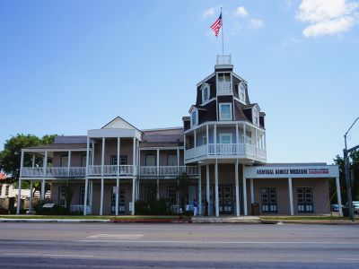
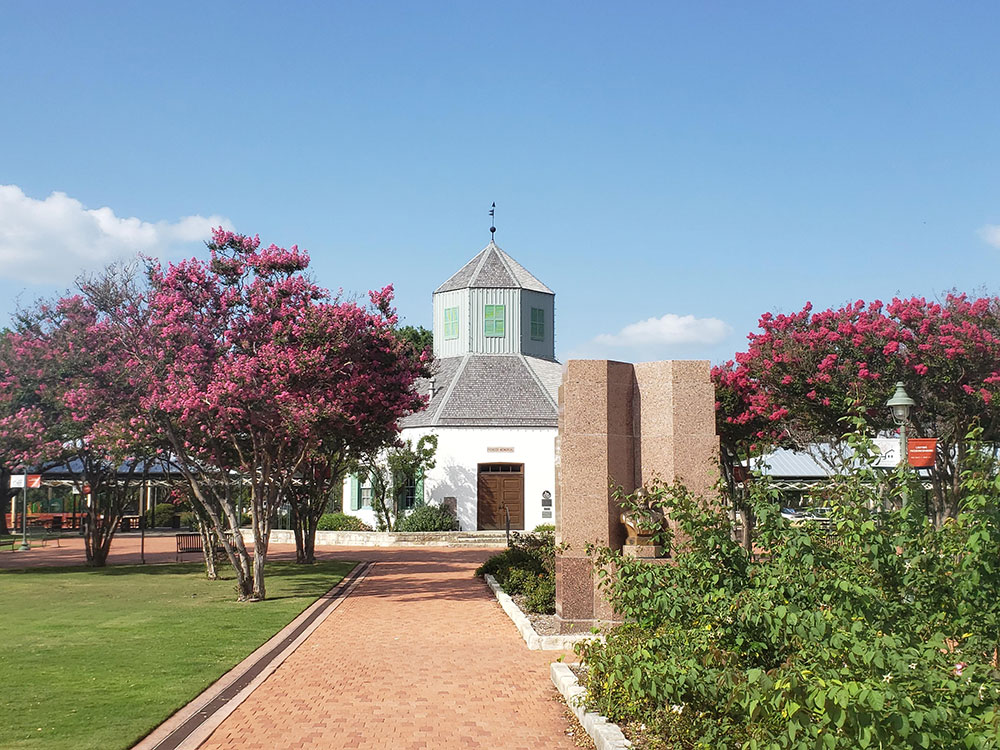
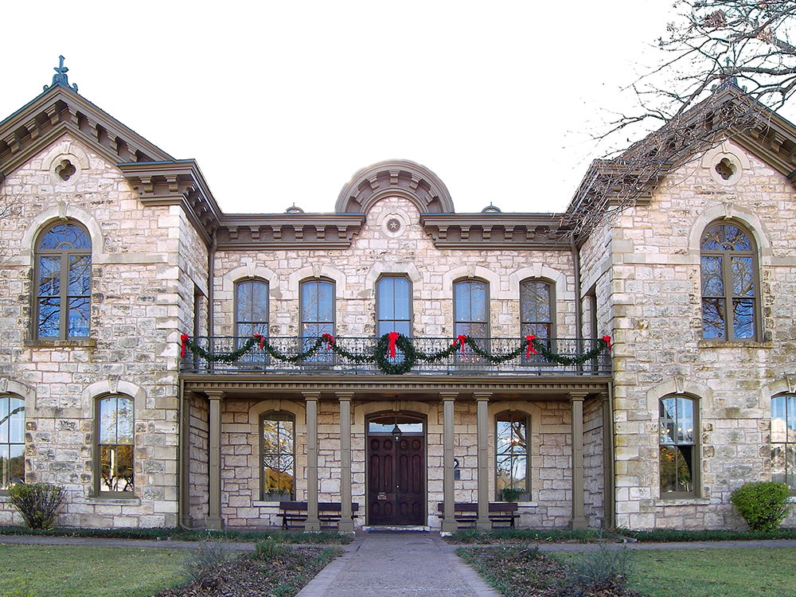
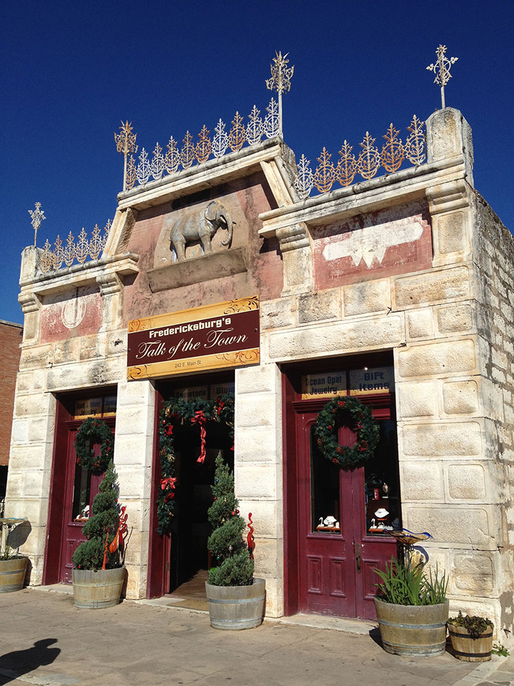

German inspired Texas town with Fredericksburg Historic District added to the National Register of Historic Places in Texas
General Information
Open to visitors year-round.
Main Street shops typically open Monday–Saturday 10:00 AM – 5:00 PM, Sunday 12:00 PM – 5:00 PM (hours vary by business).
Free to visit; individual attractions vary.
How to Get There
From Austin (78 mi): Follow US-290 W from Austin for approximately 78 miles, then turn right onto N. Adams St to reach downtown Fredericksburg.
Overview
Fredericksburg is a German-heritage town in the Texas Hill Country, about 78 miles west of Austin and 70 miles north of San Antonio. Founded by German immigrants in 1846, it still shows its roots in its architecture, food, and festivals, and it packs a walkable historic Main Street, a major WWII museum, and the heart of the Hill Country wine trail into one easy weekend trip.
History & Culture
Named for Prussian Prince Frederick and settled by German immigrants who initially kept their own language and traditions, Fredericksburg's historic district was added to the National Register of Historic Places in 1970. The town is also the birthplace of WWII Fleet Admiral Chester Nimitz, and just south of downtown, Cross Mountain — marked with a cross since Spanish missionary days — hosts the town's annual Easter Fires pageant.
Popular Attractions and Activities
Historic Main Street
Fredericksburg's walkable downtown mixes German-heritage architecture with boutiques, tasting rooms, restaurants, and art galleries.
- Specialty shops, boutiques, and restaurants in historic buildings.
- Art galleries featuring fine art, photography, sculpture, and Western art.
- Pioneer Museum – Historic buildings and artifacts telling the story of the town's original German settlers.
- Marktplatz – Central plaza and home to the Vereins Kirche, a replica of the settlers' original community church.
National Museum of the Pacific War
One of the nation's premier military museums, honoring Fredericksburg native Chester Nimitz with immersive exhibits, historic artifacts, and the story of the Pacific Theater in World War II.
Texas Wine Country
Fredericksburg anchors the Texas Hill Country AVA, one of the largest wine-growing regions in the country, with dozens of wineries and tasting rooms in town and along the Highway 290 Wine Trail.
Wildflowers and Day Trips
The surrounding countryside is prime territory for scenic drives and outdoor stops.
- Wildseed Farms – One of the largest working wildflower farms in the U.S., with seasonal blooms and walking paths.
- Enchanted Rock State Natural Area – A giant pink granite dome with hiking and rock climbing, about 17 miles north of town.
- Winding Hill Country roads past vineyards, ranches, and wildflower fields.
Peach Season
The Fredericksburg-Stonewall area is known as the Peach Capital of Texas, with roadside stands and orchards selling fresh and pick-your-own peaches from May through August.
Visitor Highlights
| Activity | Description |
|---|---|
| Main Street | Shop, dine, and browse galleries in the historic downtown district. |
| WWII History | Tour the National Museum of the Pacific War. |
| Wine Tasting | Visit wineries in town and along the Highway 290 Wine Trail. |
| Day Trips | Explore Wildseed Farms and Enchanted Rock State Natural Area. |
| Peach Picking | Buy or pick fresh peaches at area farms in season. |
Best Time to Visit
| Time | What to Expect |
|---|---|
| Spring (March–April) | Peak wildflower season across the Hill Country. |
| Summer (May–August) | Peach season, with orchards open for picking and roadside stands in town. |
| Fall | Harvest season and comfortable temperatures for wine touring. |
| Weekdays | Quieter Main Street and easier winery reservations than weekends. |
Why Visit Fredericksburg?
- Wander a historic German-heritage downtown full of shops, galleries, and restaurants.
- Learn WWII history at the National Museum of the Pacific War.
- Taste your way through Texas wine country along the Highway 290 Wine Trail.
- Day-trip to Enchanted Rock or Wildseed Farms for Hill Country scenery.
- Time it for peach season or wildflower season for a bonus reason to visit.
This article is based on publicly available information about Fredericksburg, Texas, as well as material from the Wikipedia article "Fredericksburg, Texas", used under the Creative Commons Attribution-Share-Alike License 3.0.
Featured Locations

Fort Martin Scott State Historic Site
Military post established in 1848 as the region's first frontier fort built to protect settlers from Native American raids, featuring a reconstructed stone guardhouse and interpretive buildings that bring the antebellum frontier to life.

Jeff P from Berkeley, CA, USA, CC BY 2.0, via Wikimedia Commons; Image Size Adjusted
.jpg){kind=link}
National Museum of the Pacific War
World-class museum dedicated to the American experience in the Pacific Theater of World War II, built in the birthplace of Fleet Admiral Chester W. Nimitz.


